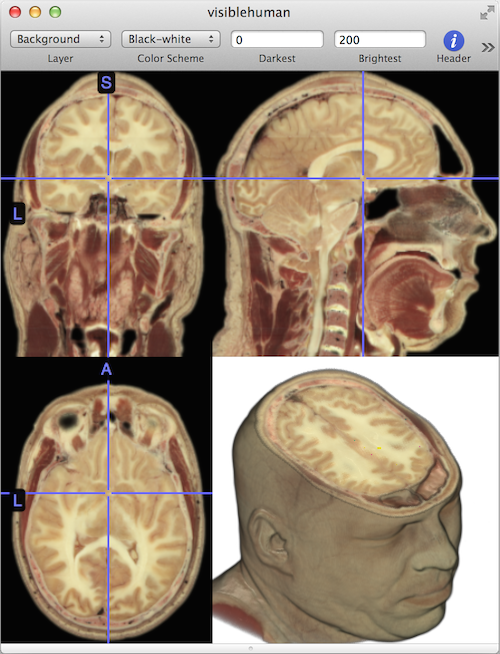

MRIcro for macOS
MRIcro for macOS¶
MRIcro is a small program that runs on Apple macOS for viewing the NIfTI format of medical images popular with scientists. Medical DICOM images can be converted to NIfTI using tools like my free dcm2nii . This software can be used to inspect images from many different modalities including Magnetic Resonance Imaging (MRI), Computerized Axial Tomography (CAT, CT), Positron Emission Tomography (PET), Scanning Electron Microscopes (SEM) and 3D ultrasounds. This can help scientists visualize data or students learn anatomy.
{kind=link}
Requirements, Downloading and Installation¶
- This software is available for Macintosh macOS 10.7 and later with 64-bit Intel CPUs. Users of other operating systems should consider the more powerful MRIcroGL . Users with older versions of macOS should consider MRIcron . The software uses the computers graphics card, so computers with better cards and drivers will be able to view higher resolution images as described in the troubleshooting section.
Supported Formats¶
This software can display the following formats: NIfTI (.nii, .nii.gz, .hdr/.img),Bio-Rad Pic (.pic), NRRD ,Philips (.par/.rec), ITK MetaImage (.mhd, .mha), AFNI(.head/.brik), Freesurfer (.mgh, .mgz),DICOM (extensions vary)
Getting Started¶
To load an image, you can drag the image to the application icon, drag the image to an open window, or use the File/Open command. The software also provides a File/OpenRecent menu item for reloading images. You can view multiple images simultaneously. Here are some simple commands for adjusting the view:
Toolbar adjustments (you can hide or show the toolbar with the View menu)
The “Color Scheme” pulldown menu allows you to adjust the colors used to display image intensity. Initially, this is set to black-white, but you have many options such as blue-green.
The “Darkest” and “Brightest” number values allow you to display the range for image intensity. For example, in Figure 2 the color range for the blue-green overlay is from 2 to 5.
The “I”nformation button displays basic information about your image (e.g. image resolution).
The “View” pull down menu allows you to set whether you want to see only 2D slices, only 3D renderings or both (the default).
Mouse/Touchpad adjustments
Click on any location on a 2D slice to jump to that location.
Drag the 3D rendering to rotate the object.
Roll the scroll wheel up and down (or pull two fingers up and down on a touch pad) to adjust the clipping depth of the 3D rendering (for example, in Figure 2 we have clipped the top of the brain from the rendering).
Right-click and drag over the 3D rendering to adjust the position of the clipping plane (for example, in Figure 2 we have set the clip plane to remove the top of the head).
If you have an overlay loaded (described below), right-click and drag over the 2D slices to adjust the transparency of the overlay.
If you have a 4D dataset loaded (described below), roll the scroll wheel left and right (or swipe left and right with two fingers) to adjust which volume is displayed.
Menu adjustments
The View/RemoveHaze command removes ‘dust’ from the air around an object (described below).
The View/ChangeBackground switches the background between black and white.
The Window/YokeWindows option allows you to link different images so they display the same location.
Loading Overlays¶
MRIcro viewer can load additional images on top of your initial (background) image. This is useful for interpreting the anatomical coordinates of statistical maps. For example, Figure 2 shows a scalp-stripped high resolution MRI scan in grayscale with a statistical map on top. To achieve this, first open your background image, then choose File/Add to select your overlay maps. Note that overlay maps must be aligned (in register with) your background image – however they do not have to have the same dimensions (the overlay images will be automatically resliced to the resolution of the background image). You can independently adjust the color scheme and contrast of the background and overlays by selecting the layer from the rightmost drop down menu (e.g. in Figure 2, “Overlay 1” is selected) and then setting the color scheme (e.g. blue-green) and color range (in this case 2..5). For statistical maps, these numbers typically refer to Z-scores or T-scores, and your analysis software should suggest good thresholds. You can also adjust the transparency of your overlay on the background image by right-dragging your mouse up and down over one of the 2D slices (though be careful – the same gesture over the 3D rendering adjusts the clip angle of the rendering).
Removing Haze¶
Most raw medical images exhibit a little bit of noise. This can make renderings appear dusty or hazy. The View/RemoveHaze command attempts to eliminate this noise. This is illustrated in Figure 3. You can also use other tools that will attempt to extract the brain from the surrounding scalps – popular alternatives include AFNI 3dSkullStrip, FSL Brain Extraction Tool (BET), MNI Brain Extraction based on nonlocal Segmentation Technique (BEaST), and SPM using the Clinical Toolbox.
Working with multiple images: Yoking Images¶
MRIcro viewer can display multiple images simultaneously. Sometimes we want to see if different images are aligned to each other (“in register”). For example, is an individual’s T1 scan aligned to their fMRI data, or have two individuals’ T1 scans been accurately normalized to have the same shape? If you select Window/YokeWindows clicking on one slice on any image will cause all the other images to jump to the same location. For example, in Figure 4 we have shown coordinate -44x-36x50mm on the high resolution T1 and the lower resolution T2* (functional MRI, fMRI) images.
Working with 4D datasets: Timelines and swiping¶
Many datasets are four dimensional: for example with functional MRI we often collect hundreds of images, one every second or so. Likewise, with diffusion images we often collect dozens of different gradient directions. MRIcro viewer allows you to quickly load and inspect the 4D datasets. To select a different timepoint, roll the mouse scroll wheel left or right (or swipe the touchpad left or right with two fingers). Figure 4 also shows a timeline – you can change the size of the timeline by pulling the horizontal scroll bar up and down. The timeline shows the image intensity at the selected location for all 232 volumes. Often we want to see if there are any huge outliers in the volume and then swipe to the unusual volumes to determine if they are due to reconstruction errors, poor shim or dramatic head movements. The file menu allows you to save timelines in PDF format, or to export them as text (so you can import them into your favorite spreadsheet).
Displaying Diffusion Tensor Imaging (DTI) data¶
Diffusion Tensor Imaging acquires images that are sensitive to the spontaneous, random motion of water in our tissues. Water diffuses faster in large compartments (like the ventricles of our brains) than small compartments (e.g. inside the cells of our brain). Further, diffusion can have a preferred direction (it can be “anisotropic”) – for example in the fiber tracts of our brain water diffuses faster along the axis of the axons. These properties allow us to measure the integrity of white matter in the brain and to detect acute injury (as diffusion changes rapidly). You can view any NIfTI format DTI image just like an image from any other modality – just drag and drop it. However, MRIcro viewer has a handy tool for combining fractional anisotropy maps (FA: which shows whether regions have a preferred direction) and principle vector maps (V1: which shows the preferred direction). Select the File/OpenDTI option and select either a V1 or FA image- the software will load both and display an image where the colors reveal the preferred direction and the brightness displays the magnitude of this preference. The**sample images** available from this web page include a set of FA/V1 images you can practice with. Figure 5 illustrates this view: red fibers are oriented left-right, green are anterior-posterior and blue are superior-inferior.
Troubleshooting¶
MRIcro should just work. However, in order to generate fluid graphics it relies on hardware accelerated graphics. If you attempt to load images that are beyond the capability of your graphics card and graphics driver, the images may look scrambled. For example, Figure 6 illustrates that a high-resolution image appears scrambled on my MacBook (using a Sandy Bridge processor with integrated GPU). There are four solutions to this problem. First, you can ensure that your graphics driver is up-to-date: Intel integrated graphics were crippled in versions of macOS between 10.6.6 and 10.8. However, with macOS 10.8 or later (or 10.6.6 and earlier) the Intel Sandy Bridge and Ivy Bridge MacBooks and MacBook Airs should be able to render images up to 256x256x256 voxels (press the round ‘header information’ button in MRIcro’s toolbar to see the resolution of an image). Second, you could use a different computer – computers with a modern dedicated graphics cards should be able to display high resolution scans flawlessly. Third, you could use MRIcron instead – MRIcron does not use the graphics card so it runs on any computer (though it is slower and therefore the interface is not as fluid). Finally, you can reslice your data to a lower resolution (for example using one of my “reslice” scripts . for SPM and Matlab).
Alternatives¶
- MRIcro only runs on Macintosh macOS. It was designed to be a simple, intuitive tool for displaying medical images. However, just like there are different types of car to suit different drivers, there are different programs that are suited for different applications. Here are some of my favorites.
FSLeyes runs on macOS and Linux (and Windows via WSL). It includes great features like a nice DTI fiber tracking view.
medInria is a very versatile tool, and is my personal favorite for DTI data.
MRIcroS is a surface rendering tool that uses Matlab. It has nice tools for DTI and connectivity mapping.
itk-SNAP is a powerful tool for segmenting brain structures with useful visualization features.
MRIcroGL : native versions for Windows, macOS and Linux. Scriptable, fast, and flexible. Visually very similar to MRIcro viewer, though less “Mac like” and the flexibility means it is more difficult to master. In our car analogy it is our BMW – lots of performance and features.
MRIcron : This has native versions for Windows, macOS and Linux. It does not require a graphics card and so it can run anywhere. In our car analogy, this is like a pickup truck that has tremendous utility (drawing tools, peristimulus plots, etc).
SPM is the most popular brain imaging tool, and it includes nice display and rendering functions. It runs on Windows, macOS and Linux but requires a Matlab license (though the open source Octave is starting to offer some support).